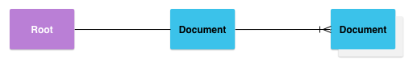
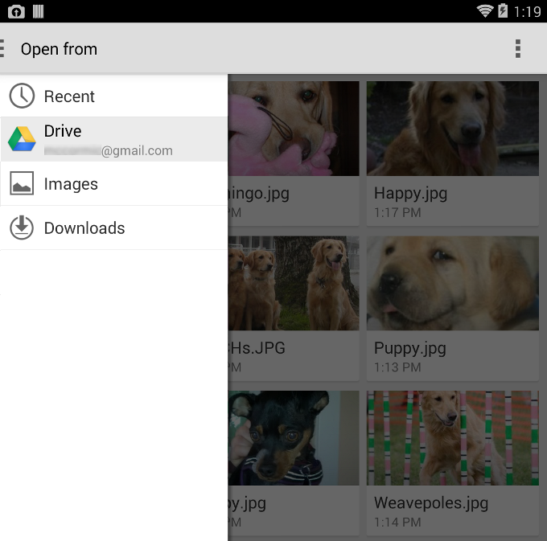
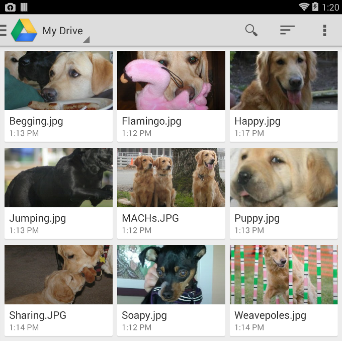

In this document
Key classes
See Also
Android 4.4 (API level 19) introduces the Storage Access Framework. The Storage Access Framework encapsulates capabilities in the Android platform that allow apps to request files from file storage services. The Storage Access Framework includes the following:
- Document provider—A content provider that allows a
storage service (such as Google Drive) to reveal the files it manages. This is
implemented as a subclass of the
DocumentsProviderclass. The document provider schema is based on a traditional file hierarchy, though how your document provider physically stores data is up to you. The Android platform includes several built-in document providers, such as Downloads, Images, and Videos. - Client app—A custom app that invokes the
ACTION_OPEN_DOCUMENTand/orACTION_CREATE_DOCUMENTintent and receives the files returned by document providers. - Picker—A system UI that lets users access documents from all document providers that satisfy the client app's search criteria.
Some of the features offered by the Storage Access Framework are as follows:
- Lets users browse content from all document providers, not just a single app.
- Makes it possible for your app to have long term, persistent access to documents owned by a document provider. Through this access users can add, edit, save, and delete files on the provider.
- Supports multiple user accounts and transient roots such as USB storage providers, which only appear if the drive is plugged in.
Overview
The Storage Access Framework centers around a content provider that is a
subclass of the DocumentsProvider class. Within a document provider, data is
structured as a traditional file hierarchy:

Figure 1. Document provider data model. A Root points to a single Document, which then starts the fan-out of the entire tree.
Note the following:
- Each document provider reports one or more
"roots" which are starting points into exploring a tree of documents.
Each root has a unique
COLUMN_ROOT_ID, and it points to a document (a directory) representing the contents under that root. Roots are dynamic by design to support use cases like multiple accounts, transient USB storage devices, or user login/log out. - Under each root is a single document. That document points to 1 to N documents, each of which in turn can point to 1 to N documents.
- Each storage backend surfaces
individual files and directories by referencing them with a unique
COLUMN_DOCUMENT_ID. Document IDs must be unique and not change once issued, since they are used for persistent URI grants across device reboots. - Documents can be either an openable file (with a specific MIME type), or a
directory containing additional documents (with the
MIME_TYPE_DIRMIME type). - Each document can have different capabilities, as described by
COLUMN_FLAGS. For example,FLAG_SUPPORTS_WRITE,FLAG_SUPPORTS_DELETE, andFLAG_SUPPORTS_THUMBNAIL. The sameCOLUMN_DOCUMENT_IDcan be included in multiple directories.
Control Flow
As stated above, the document provider data model is based on a traditional
file hierarchy. However, you can physically store your data however you like, as
long as it can be accessed through the DocumentsProvider API. For example, you
could use tag-based cloud storage for your data.
Figure 2 shows an example of how a photo app might use the Storage Access Framework to access stored data:

Figure 2. Storage Access Framework Flow
Note the following:
- In the Storage Access Framework, providers and clients don't interact directly. A client requests permission to interact with files (that is, to read, edit, create, or delete files).
- The interaction starts when an application (in this example, a photo app) fires the intent
ACTION_OPEN_DOCUMENTorACTION_CREATE_DOCUMENT. The intent may include filters to further refine the criteria—for example, "give me all openable files that have the 'image' MIME type." - Once the intent fires, the system picker goes to each registered provider and shows the user the matching content roots.
- The picker gives users a standard interface for accessing documents, even though the underlying document providers may be very different. For example, figure 2 shows a Google Drive provider, a USB provider, and a cloud provider.
Figure 3 shows a picker in which a user searching for images has selected a Google Drive account:

Figure 3. Picker
When the user selects Google Drive the images are displayed, as shown in figure 4. From that point on, the user can interact with them in whatever ways are supported by the provider and client app.

Figure 4. Images
Writing a Client App
On Android 4.3 and lower, if you want your app to retrieve a file from another
app, it must invoke an intent such as ACTION_PICK
or ACTION_GET_CONTENT. The user must then select
a single app from which to pick a file and the selected app must provide a user
interface for the user to browse and pick from the available files.
On Android 4.4 and higher, you have the additional option of using the
ACTION_OPEN_DOCUMENT intent,
which displays a picker UI controlled by the system that allows the user to
browse all files that other apps have made available. From this single UI, the
user can pick a file from any of the supported apps.
ACTION_OPEN_DOCUMENT is
not intended to be a replacement for ACTION_GET_CONTENT.
The one you should use depends on the needs of your app:
- Use
ACTION_GET_CONTENTif you want your app to simply read/import data. With this approach, the app imports a copy of the data, such as an image file. - Use
ACTION_OPEN_DOCUMENTif you want your app to have long term, persistent access to documents owned by a document provider. An example would be a photo-editing app that lets users edit images stored in a document provider.
This section describes how to write client apps based on the
ACTION_OPEN_DOCUMENT and
ACTION_CREATE_DOCUMENT intents.
Search for documents
The following snippet uses ACTION_OPEN_DOCUMENT
to search for document providers that
contain image files:
private static final int READ_REQUEST_CODE = 42;
...
/**
* Fires an intent to spin up the "file chooser" UI and select an image.
*/
public void performFileSearch() {
// ACTION_OPEN_DOCUMENT is the intent to choose a file via the system's file
// browser.
Intent intent = new Intent(Intent.ACTION_OPEN_DOCUMENT);
// Filter to only show results that can be "opened", such as a
// file (as opposed to a list of contacts or timezones)
intent.addCategory(Intent.CATEGORY_OPENABLE);
// Filter to show only images, using the image MIME data type.
// If one wanted to search for ogg vorbis files, the type would be "audio/ogg".
// To search for all documents available via installed storage providers,
// it would be "*/*".
intent.setType("image/*");
startActivityForResult(intent, READ_REQUEST_CODE);
}
Note the following:
- When the app fires the
ACTION_OPEN_DOCUMENTintent, it launches a picker that displays all matching document providers. - Adding the category
CATEGORY_OPENABLEto the intent filters the results to display only documents that can be opened, such as image files. - The statement
intent.setType("image/*")further filters to display only documents that have the image MIME data type.
Process Results
Once the user selects a document in the picker,
onActivityResult() gets called.
The URI that points to the selected document is contained in the resultData
parameter. Extract the URI using getData().
Once you have it, you can use it to retrieve the document the user wants. For
example:
@Override
public void onActivityResult(int requestCode, int resultCode,
Intent resultData) {
// The ACTION_OPEN_DOCUMENT intent was sent with the request code
// READ_REQUEST_CODE. If the request code seen here doesn't match, it's the
// response to some other intent, and the code below shouldn't run at all.
if (requestCode == READ_REQUEST_CODE && resultCode == Activity.RESULT_OK) {
// The document selected by the user won't be returned in the intent.
// Instead, a URI to that document will be contained in the return intent
// provided to this method as a parameter.
// Pull that URI using resultData.getData().
Uri uri = null;
if (resultData != null) {
uri = resultData.getData();
Log.i(TAG, "Uri: " + uri.toString());
showImage(uri);
}
}
}
Examine document metadata
Once you have the URI for a document, you gain access to its metadata. This snippet grabs the metadata for a document specified by the URI, and logs it:
public void dumpImageMetaData(Uri uri) {
// The query, since it only applies to a single document, will only return
// one row. There's no need to filter, sort, or select fields, since we want
// all fields for one document.
Cursor cursor = getActivity().getContentResolver()
.query(uri, null, null, null, null, null);
try {
// moveToFirst() returns false if the cursor has 0 rows. Very handy for
// "if there's anything to look at, look at it" conditionals.
if (cursor != null && cursor.moveToFirst()) {
// Note it's called "Display Name". This is
// provider-specific, and might not necessarily be the file name.
String displayName = cursor.getString(
cursor.getColumnIndex(OpenableColumns.DISPLAY_NAME));
Log.i(TAG, "Display Name: " + displayName);
int sizeIndex = cursor.getColumnIndex(OpenableColumns.SIZE);
// If the size is unknown, the value stored is null. But since an
// int can't be null in Java, the behavior is implementation-specific,
// which is just a fancy term for "unpredictable". So as
// a rule, check if it's null before assigning to an int. This will
// happen often: The storage API allows for remote files, whose
// size might not be locally known.
String size = null;
if (!cursor.isNull(sizeIndex)) {
// Technically the column stores an int, but cursor.getString()
// will do the conversion automatically.
size = cursor.getString(sizeIndex);
} else {
size = "Unknown";
}
Log.i(TAG, "Size: " + size);
}
} finally {
cursor.close();
}
}
Open a document
Once you have the URI for a document, you can open it or do whatever else you want to do with it.
Bitmap
Here is an example of how you might open a Bitmap:
private Bitmap getBitmapFromUri(Uri uri) throws IOException {
ParcelFileDescriptor parcelFileDescriptor =
getContentResolver().openFileDescriptor(uri, "r");
FileDescriptor fileDescriptor = parcelFileDescriptor.getFileDescriptor();
Bitmap image = BitmapFactory.decodeFileDescriptor(fileDescriptor);
parcelFileDescriptor.close();
return image;
}
Note that you should not do this operation on the UI thread. Do it in the
background, using AsyncTask. Once you open the bitmap, you
can display it in an ImageView.
Get an InputStream
Here is an example of how you can get an InputStream from the URI. In this
snippet, the lines of the file are being read into a string:
private String readTextFromUri(Uri uri) throws IOException {
InputStream inputStream = getContentResolver().openInputStream(uri);
BufferedReader reader = new BufferedReader(new InputStreamReader(
inputStream));
StringBuilder stringBuilder = new StringBuilder();
String line;
while ((line = reader.readLine()) != null) {
stringBuilder.append(line);
}
fileInputStream.close();
parcelFileDescriptor.close();
return stringBuilder.toString();
}
Create a new document
Your app can create a new document in a document provider using the
ACTION_CREATE_DOCUMENT
intent. To create a file you give your intent a MIME type and a file name, and
launch it with a unique request code. The rest is taken care of for you:
// Here are some examples of how you might call this method.
// The first parameter is the MIME type, and the second parameter is the name
// of the file you are creating:
//
// createFile("text/plain", "foobar.txt");
// createFile("image/png", "mypicture.png");
// Unique request code.
private static final int WRITE_REQUEST_CODE = 43;
...
private void createFile(String mimeType, String fileName) {
Intent intent = new Intent(Intent.ACTION_CREATE_DOCUMENT);
// Filter to only show results that can be "opened", such as
// a file (as opposed to a list of contacts or timezones).
intent.addCategory(Intent.CATEGORY_OPENABLE);
// Create a file with the requested MIME type.
intent.setType(mimeType);
intent.putExtra(Intent.EXTRA_TITLE, fileName);
startActivityForResult(intent, WRITE_REQUEST_CODE);
}
Once you create a new document you can get its URI in
onActivityResult(), so that you
can continue to write to it.
Delete a document
If you have the URI for a document and the document's
Document.COLUMN_FLAGS
contains
SUPPORTS_DELETE,
you can delete the document. For example:
DocumentsContract.deleteDocument(getContentResolver(), uri);
Edit a document
You can use the Storage Access Framework to edit a text document in place.
This snippet fires
the ACTION_OPEN_DOCUMENT intent and uses the
category CATEGORY_OPENABLE to to display only
documents that can be opened. It further filters to show only text files:
private static final int EDIT_REQUEST_CODE = 44;
/**
* Open a file for writing and append some text to it.
*/
private void editDocument() {
// ACTION_OPEN_DOCUMENT is the intent to choose a file via the system's
// file browser.
Intent intent = new Intent(Intent.ACTION_OPEN_DOCUMENT);
// Filter to only show results that can be "opened", such as a
// file (as opposed to a list of contacts or timezones).
intent.addCategory(Intent.CATEGORY_OPENABLE);
// Filter to show only text files.
intent.setType("text/plain");
startActivityForResult(intent, EDIT_REQUEST_CODE);
}
Next, from onActivityResult()
(see Process results) you can call code to perform the edit.
The following snippet gets a FileOutputStream
from the ContentResolver. By default it uses “write” mode.
It's best practice to ask for the least amount of access you need, so don’t ask
for read/write if all you need is write:
private void alterDocument(Uri uri) {
try {
ParcelFileDescriptor pfd = getActivity().getContentResolver().
openFileDescriptor(uri, "w");
FileOutputStream fileOutputStream =
new FileOutputStream(pfd.getFileDescriptor());
fileOutputStream.write(("Overwritten by MyCloud at " +
System.currentTimeMillis() + "\n").getBytes());
// Let the document provider know you're done by closing the stream.
fileOutputStream.close();
pfd.close();
} catch (FileNotFoundException e) {
e.printStackTrace();
} catch (IOException e) {
e.printStackTrace();
}
}
Persist permissions
When your app opens a file for reading or writing, the system gives your app a URI permission grant for that file. It lasts until the user's device restarts. But suppose your app is an image-editing app, and you want users to be able to access the last 5 images they edited, directly from your app. If the user's device has restarted, you'd have to send the user back to the system picker to find the files, which is obviously not ideal.
To prevent this from happening, you can persist the permissions the system gives your app. Effectively, your app "takes" the persistable URI permission grant that the system is offering. This gives the user continued access to the files through your app, even if the device has been restarted:
final int takeFlags = intent.getFlags()
& (Intent.FLAG_GRANT_READ_URI_PERMISSION
| Intent.FLAG_GRANT_WRITE_URI_PERMISSION);
// Check for the freshest data.
getContentResolver().takePersistableUriPermission(uri, takeFlags);
There is one final step. You may have saved the most
recent URIs your app accessed, but they may no longer be valid—another app
may have deleted or modified a document. Thus, you should always call
getContentResolver().takePersistableUriPermission() to check for the
freshest data.
Writing a Custom Document Provider
If you're developing an app that provides storage services for files (such as a cloud save service), you can make your files available through the Storage Access Framework by writing a custom document provider. This section describes how to do this.
Manifest
To implement a custom document provider, add the following to your application's manifest:
- A target of API level 19 or higher.
- A
<provider>element that declares your custom storage provider. - The name of your provider, which is its class name, including package name.
For example:
com.example.android.storageprovider.MyCloudProvider. - The name of your authority, which is your package name (in this example,
com.example.android.storageprovider) plus the type of content provider (documents). For example,com.example.android.storageprovider.documents. - The attribute
android:exportedset to"true". You must export your provider so that other apps can see it. - The attribute
android:grantUriPermissionsset to"true". This allows the system to grant other apps access to content in your provider. For a discussion of how to persist a grant for a particular document, see Persist permissions. - The
MANAGE_DOCUMENTSpermission. By default a provider is available to everyone. Adding this permission restricts your provider to the system, which is important for security. - An intent filter that includes the
android.content.action.DOCUMENTS_PROVIDERaction, so that your provider appears in the picker when the system searches for providers.
Here are excerpts from a sample manifest that includes a provider:
<manifest... >
...
<uses-sdk
android:minSdkVersion="19"
android:targetSdkVersion="19" />
....
<provider
android:name="com.example.android.storageprovider.MyCloudProvider"
android:authorities="com.example.android.storageprovider.documents"
android:grantUriPermissions="true"
android:exported="true"
android:permission="android.permission.MANAGE_DOCUMENTS">
<intent-filter>
<action android:name="android.content.action.DOCUMENTS_PROVIDER" />
</intent-filter>
</provider>
</application>
</manifest>
Supporting devices running Android 4.3 and lower
The
ACTION_OPEN_DOCUMENT intent is only available
on devices running Android 4.4 and higher.
If you want your application to support ACTION_GET_CONTENT
to accommodate devices that are running Android 4.3 and lower, you should
disable the ACTION_GET_CONTENT intent filter in
your manifest if a device is running Android 4.4 or higher. A
document provider and ACTION_GET_CONTENT should be considered
mutually exclusive. If you support both of them simultaneously, your app will
appear twice in the system picker UI, offering two different ways of accessing
your stored data. This would be confusing for users.
Here is the recommended way of disabling the
ACTION_GET_CONTENT intent filter for devices
running Android version 4.4 or higher:
- In your
bool.xmlresources file underres/values/, add this line:<bool name="atMostJellyBeanMR2">true</bool>
- In your
bool.xmlresources file underres/values-v19/, add this line:<bool name="atMostJellyBeanMR2">false</bool>
- Add an
activity
alias to disable the
ACTION_GET_CONTENTintent filter for versions 4.4 (API level 19) and higher. For example:<!-- This activity alias is added so that GET_CONTENT intent-filter can be disabled for builds on API level 19 and higher. --> <activity-alias android:name="com.android.example.app.MyPicker" android:targetActivity="com.android.example.app.MyActivity" ... android:enabled="@bool/atMostJellyBeanMR2"> <intent-filter> <action android:name="android.intent.action.GET_CONTENT" /> <category android:name="android.intent.category.OPENABLE" /> <category android:name="android.intent.category.DEFAULT" /> <data android:mimeType="image/*" /> <data android:mimeType="video/*" /> </intent-filter> </activity-alias>
Contracts
Usually when you write a custom content provider, one of the tasks is
implementing contract classes, as described in the
Content Providers developers guide. A contract class is a public final class
that contains constant definitions for the URIs, column names, MIME types, and
other metadata that pertain to the provider. The Storage Access Framework
provides these contract classes for you, so you don't need to write your
own:
For example, here are the columns you might return in a cursor when your document provider is queried for documents or the root:
private static final String[] DEFAULT_ROOT_PROJECTION =
new String[]{Root.COLUMN_ROOT_ID, Root.COLUMN_MIME_TYPES,
Root.COLUMN_FLAGS, Root.COLUMN_ICON, Root.COLUMN_TITLE,
Root.COLUMN_SUMMARY, Root.COLUMN_DOCUMENT_ID,
Root.COLUMN_AVAILABLE_BYTES,};
private static final String[] DEFAULT_DOCUMENT_PROJECTION = new
String[]{Document.COLUMN_DOCUMENT_ID, Document.COLUMN_MIME_TYPE,
Document.COLUMN_DISPLAY_NAME, Document.COLUMN_LAST_MODIFIED,
Document.COLUMN_FLAGS, Document.COLUMN_SIZE,};
Subclass DocumentsProvider
The next step in writing a custom document provider is to subclass the
abstract class DocumentsProvider. At minimum, you need
to implement the following methods:
These are the only methods you are strictly required to implement, but there
are many more you might want to. See DocumentsProvider
for details.
Implement queryRoots
Your implementation of queryRoots() must return a Cursor pointing to all the
root directories of your document providers, using columns defined in
DocumentsContract.Root.
In the following snippet, the projection parameter represents the
specific fields the caller wants to get back. The snippet creates a new cursor
and adds one row to it—one root, a top level directory, like
Downloads or Images. Most providers only have one root. You might have more than one,
for example, in the case of multiple user accounts. In that case, just add a
second row to the cursor.
@Override
public Cursor queryRoots(String[] projection) throws FileNotFoundException {
// Create a cursor with either the requested fields, or the default
// projection if "projection" is null.
final MatrixCursor result =
new MatrixCursor(resolveRootProjection(projection));
// If user is not logged in, return an empty root cursor. This removes our
// provider from the list entirely.
if (!isUserLoggedIn()) {
return result;
}
// It's possible to have multiple roots (e.g. for multiple accounts in the
// same app) -- just add multiple cursor rows.
// Construct one row for a root called "MyCloud".
final MatrixCursor.RowBuilder row = result.newRow();
row.add(Root.COLUMN_ROOT_ID, ROOT);
row.add(Root.COLUMN_SUMMARY, getContext().getString(R.string.root_summary));
// FLAG_SUPPORTS_CREATE means at least one directory under the root supports
// creating documents. FLAG_SUPPORTS_RECENTS means your application's most
// recently used documents will show up in the "Recents" category.
// FLAG_SUPPORTS_SEARCH allows users to search all documents the application
// shares.
row.add(Root.COLUMN_FLAGS, Root.FLAG_SUPPORTS_CREATE |
Root.FLAG_SUPPORTS_RECENTS |
Root.FLAG_SUPPORTS_SEARCH);
// COLUMN_TITLE is the root title (e.g. Gallery, Drive).
row.add(Root.COLUMN_TITLE, getContext().getString(R.string.title));
// This document id cannot change once it's shared.
row.add(Root.COLUMN_DOCUMENT_ID, getDocIdForFile(mBaseDir));
// The child MIME types are used to filter the roots and only present to the
// user roots that contain the desired type somewhere in their file hierarchy.
row.add(Root.COLUMN_MIME_TYPES, getChildMimeTypes(mBaseDir));
row.add(Root.COLUMN_AVAILABLE_BYTES, mBaseDir.getFreeSpace());
row.add(Root.COLUMN_ICON, R.drawable.ic_launcher);
return result;
}
Implement queryChildDocuments
Your implementation of
queryChildDocuments()
must return a Cursor that points to all the files in
the specified directory, using columns defined in
DocumentsContract.Document.
This method gets called when you choose an application root in the picker UI. It gets the child documents of a directory under the root. It can be called at any level in the file hierarchy, not just the root. This snippet makes a new cursor with the requested columns, then adds information about every immediate child in the parent directory to the cursor. A child can be an image, another directory—any file:
@Override
public Cursor queryChildDocuments(String parentDocumentId, String[] projection,
String sortOrder) throws FileNotFoundException {
final MatrixCursor result = new
MatrixCursor(resolveDocumentProjection(projection));
final File parent = getFileForDocId(parentDocumentId);
for (File file : parent.listFiles()) {
// Adds the file's display name, MIME type, size, and so on.
includeFile(result, null, file);
}
return result;
}
Implement queryDocument
Your implementation of
queryDocument()
must return a Cursor that points to the specified file,
using columns defined in DocumentsContract.Document.
The queryDocument()
method returns the same information that was passed in
queryChildDocuments(),
but for a specific file:
@Override
public Cursor queryDocument(String documentId, String[] projection) throws
FileNotFoundException {
// Create a cursor with the requested projection, or the default projection.
final MatrixCursor result = new
MatrixCursor(resolveDocumentProjection(projection));
includeFile(result, documentId, null);
return result;
}
Implement openDocument
You must implement openDocument() to return a ParcelFileDescriptor representing
the specified file. Other apps can use the returned ParcelFileDescriptor
to stream data. The system calls this method once the user selects a file
and the client app requests access to it by calling
openFileDescriptor().
For example:
@Override
public ParcelFileDescriptor openDocument(final String documentId,
final String mode,
CancellationSignal signal) throws
FileNotFoundException {
Log.v(TAG, "openDocument, mode: " + mode);
// It's OK to do network operations in this method to download the document,
// as long as you periodically check the CancellationSignal. If you have an
// extremely large file to transfer from the network, a better solution may
// be pipes or sockets (see ParcelFileDescriptor for helper methods).
final File file = getFileForDocId(documentId);
final boolean isWrite = (mode.indexOf('w') != -1);
if(isWrite) {
// Attach a close listener if the document is opened in write mode.
try {
Handler handler = new Handler(getContext().getMainLooper());
return ParcelFileDescriptor.open(file, accessMode, handler,
new ParcelFileDescriptor.OnCloseListener() {
@Override
public void onClose(IOException e) {
// Update the file with the cloud server. The client is done
// writing.
Log.i(TAG, "A file with id " +
documentId + " has been closed!
Time to " +
"update the server.");
}
});
} catch (IOException e) {
throw new FileNotFoundException("Failed to open document with id "
+ documentId + " and mode " + mode);
}
} else {
return ParcelFileDescriptor.open(file, accessMode);
}
}
Security
Suppose your document provider is a password-protected cloud storage service
and you want to make sure that users are logged in before you start sharing their files.
What should your app do if the user is not logged in? The solution is to return
zero roots in your implementation of queryRoots(). That is, an empty root cursor:
public Cursor queryRoots(String[] projection) throws FileNotFoundException {
...
// If user is not logged in, return an empty root cursor. This removes our
// provider from the list entirely.
if (!isUserLoggedIn()) {
return result;
}
The other step is to call getContentResolver().notifyChange().
Remember the DocumentsContract? We’re using it to make
this URI. The following snippet tells the system to query the roots of your
document provider whenever the user's login status changes. If the user is not
logged in, a call to queryRoots() returns an
empty cursor, as shown above. This ensures that a provider's documents are only
available if the user is logged into the provider.
private void onLoginButtonClick() {
loginOrLogout();
getContentResolver().notifyChange(DocumentsContract
.buildRootsUri(AUTHORITY), null);
}